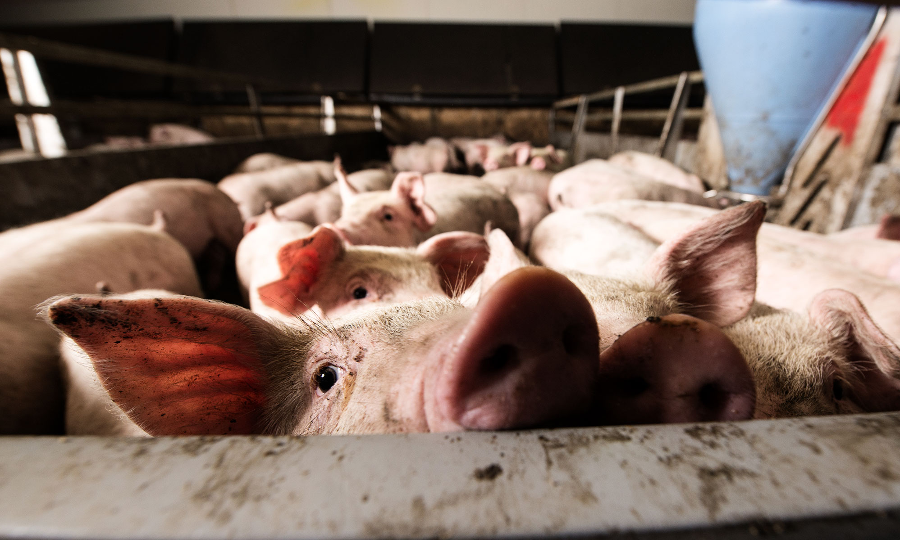

Zoonotic Zoo

Swine Flu

Full name:
Influenza A virus subtype H1N1Type:
Influenza A virusVectors:
Humans, pigsSpreads via:
Becomes airborn from coughing or sneezing, can be acquired from contact with an infected surfaceHuman Infections:
Nearly 500,000 confirmed, at least 700,000,000 suspectedHuman Fatality:
18,500 confirmed, 284,000 suspectedPrevention:
Hand washing, mask wearing, social distancing, vaccinationH1N1 is a mutation of the influenza virus that became the first pandemic of the new millenium when the vaccines available were for more common strains. It was also responsible for the 1918 Spanish flu pandemic when it killed healthy young adults en masse. H1N1 isn't actually anymore deadly than other flu strains by itself, but poor preparedness and hygiene on pig farms has allowed it to continue to be an ongoing menace.
There are many types of influenza viruses. Subtype A often infects the largest variety of host species, both birds and mammals, but H1N1 is the most common type to be found in pigs. In both pigs and humans H1N1 attacks the epithelial cells, or the lining, of the respiratory tract.